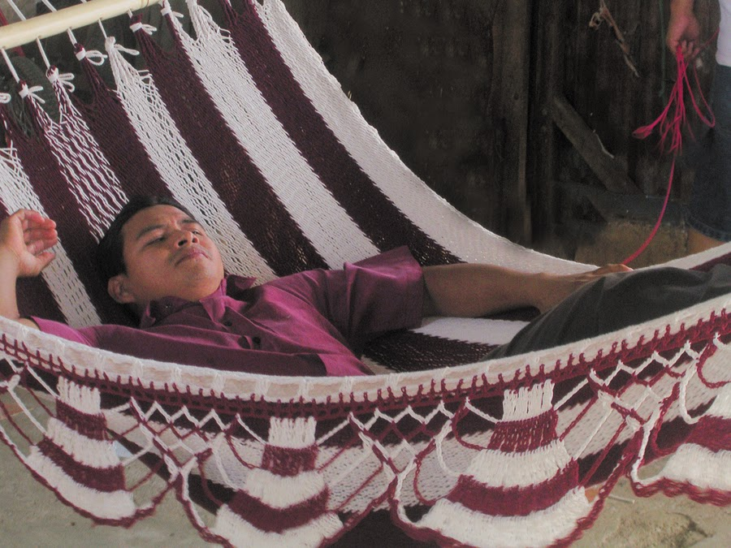

🎨 Artesanía Nicaragüense — Herencia, Identidad y Creatividad
La artesanía en Nicaragua es mucho más que una técnica manual: es una forma de resistencia cultural, una narrativa visual que conecta el pasado indígena con la creatividad contemporánea. Cada pieza elaborada por manos nicaragüenses lleva consigo siglos de historia, cosmovisión ancestral y una profunda conexión con el entorno natural. Desde los incensarios precolombinos hasta las hamacas tejidas en Masaya, la artesanía representa el alma de los pueblos, su capacidad de transformar lo cotidiano en arte.
En el contexto actual, la artesanía forma parte de la economía creativa nacional, reconocida oficialmente con el Día Nacional del Artesano cada 18 de noviembre. Esta celebración honra a miles de creadores que, con talento y dedicación, preservan técnicas milenarias mientras innovan con nuevos diseños, materiales y estilos. Las siguientes tres artesanías son consideradas íconos culturales por su historia, belleza y arraigo comunitario.
🏺 Cerámica Negra — El barro que cuenta historias
Origen: San Juan de Oriente, Matagalpa, Jinotega
Material: Barro cocido, pigmentos naturales
Características:
Tonalidades oscuras logradas por técnicas de ahumado
Motivos geométricos, zoomorfos y simbólicos
Función decorativa y utilitaria (ollas, platos, macetas)
Historia: Heredera de la alfarería indígena, con raíces en rituales prehispánicos
Tras la Revolución Sandinista, se revitalizó como símbolo de resistencia y expresión popular
Significado cultural: Cada pieza es una narrativa visual que representa la cosmovisión indígena, con símbolos como el jaguar, el mono o Quetzalcóatl

🧵 Hamacas de Masaya — Tejido de descanso y tradición
Origen: Masaya, capital artesanal de Nicaragua
Material: Hilo de algodón, madera
Características:
Tejidas a mano en telares familiares
Diseños coloridos, resistentes y ergonómicos
Incorporan barras de madera para mantener la forma abierta
Historia:
Técnica heredada de los pueblos originarios, perfeccionada por generaciones
Símbolo de descanso, hospitalidad y vida cotidiana nicaragüense
Significado cultural: Más que un objeto funcional, la hamaca representa el ritmo pausado y cálido de la vida en los barrios y comarcas del país

💍Joyería en Oro y Plata — Filigrana con alma indígena
Origen: Managua, Granada, León
Material: Oro, plata, piedras semipreciosas
Características:
Figuras de animales, deidades, símbolos indígenas
Técnica de filigrana, con acabados delicados y únicos
Piezas personalizadas para uso ceremonial y decorativo
Historia:
Inspirada en los adornos precolombinos usados por caciques y chamanes
Hoy se fusiona con estilos modernos sin perder su esencia ancestral
Significado cultural: Cada joya es una obra de arte que honra la espiritualidad y el poder simbólico de los pueblos originarios